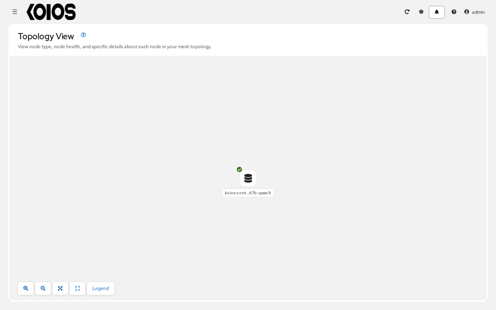
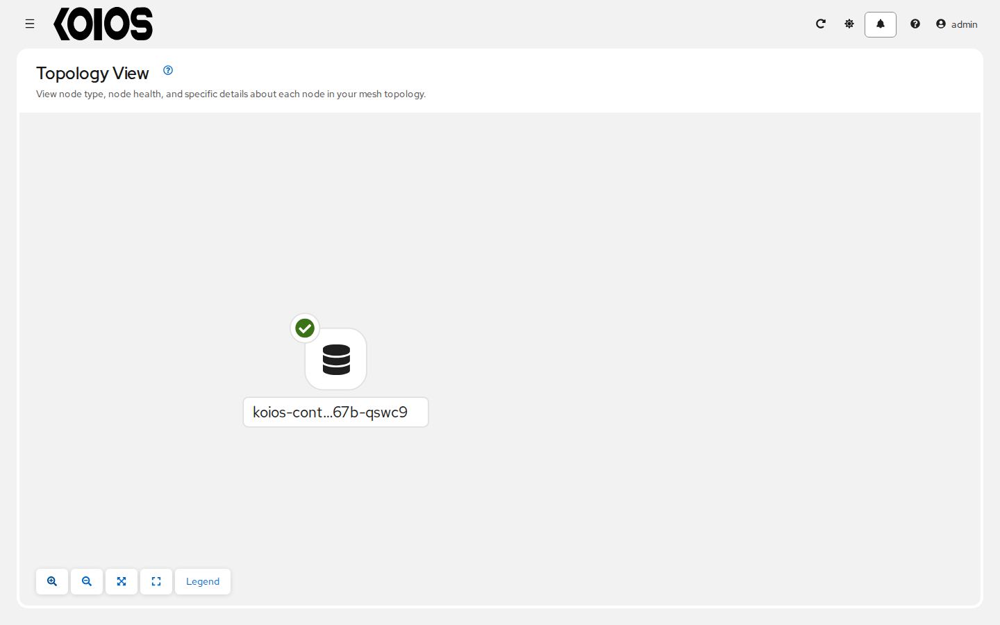
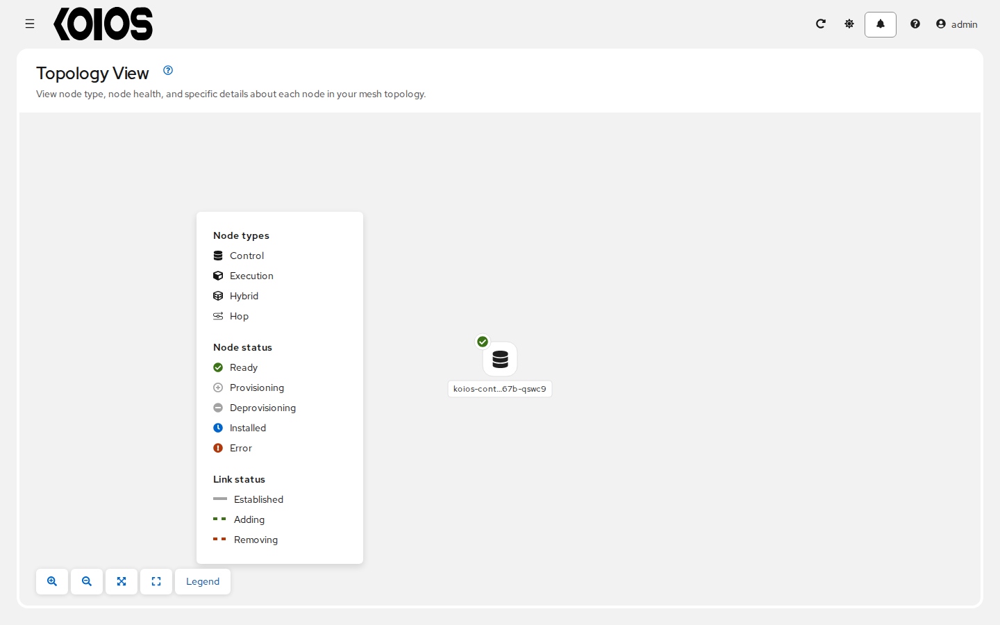
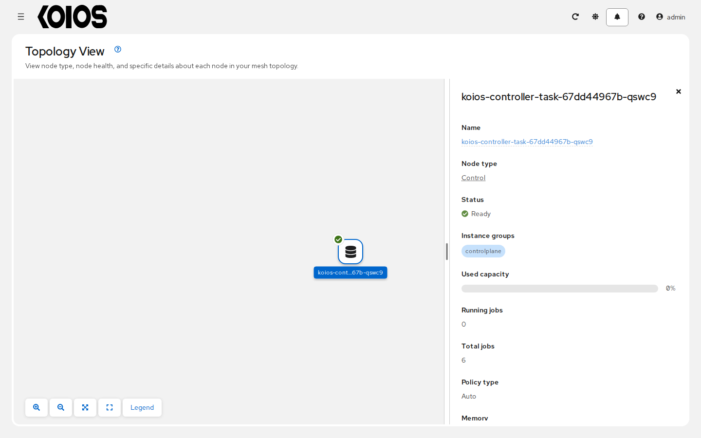
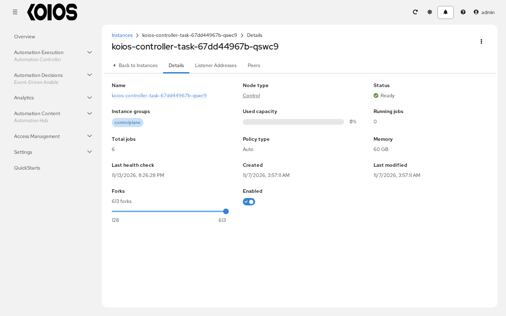

10. Topology Viewer
The topology viewer shows the instances of automation controller and the receptor links between them, with the node type, the node health and details about each node. In the user interface it is available to system administrators only: the navigation shows Topology View only to them. System auditors can read the same data from the API at /api/controller/v2/mesh_visualizer/.
In Koios Automation Platform on OpenShift or Kubernetes, the topology shows the control nodes of automation controller (one per task pod) and the execution and hop nodes you add (see Managing Capacity With Instances); jobs in container groups run in pods and do not appear as nodes.
To access the topology viewer:
Open Automation Execution > Infrastructure > Topology View.
The Topology View opens and displays a graphic representation of the nodes and how they link together.

To adjust the zoom levels or manipulate the graphic views, use the control buttons at the lower left corner of the view: Zoom in, Zoom out, Fit to screen, Reset view and Legend.
You can also click and drag to pan around, and use the scroll wheel on your mouse or trackpad to zoom. Fit to screen scales the graphic to fit on the screen and centers it, which is useful to see a large mesh in its entirety; Reset view returns to the default view.

Click Legend to show or hide the legend, which identifies the types of the nodes (Control, Execution, Hybrid and Hop), their status and the status of the links.

The legend shows the node status (Ready, Provisioning, Deprovisioning, Installed and Error), which is indicative of the health of the node; Error includes the Unavailable state of the Instances list. It also shows the link statuses:
Established: a peer connection between nodes that are ready, unavailable or disabled.
Adding: a peer connection between nodes that was selected to be added to the mesh topology.
Removing: a peer connection between nodes that was selected to be removed from the topology.
Hover over a node to highlight its connections to its immediate peers, or click a node to open a side panel with its details, such as its name, node type, status, instance groups, used capacity and jobs.

Click the name of the node in the side panel to open the details page of the instance, which provides more information about it, for example about an Error status.

From the details page of the instance you can adjust its capacity with the Forks slider and enable or disable it with the Enabled switch; a disabled instance gets no new jobs. For the execution and hop nodes you added, its actions menu (⋮) can edit or remove the instance and, for execution nodes, run a health check. For more information on creating new nodes and scaling the mesh, see Managing Capacity With Instances.